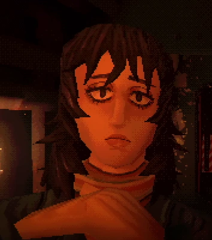
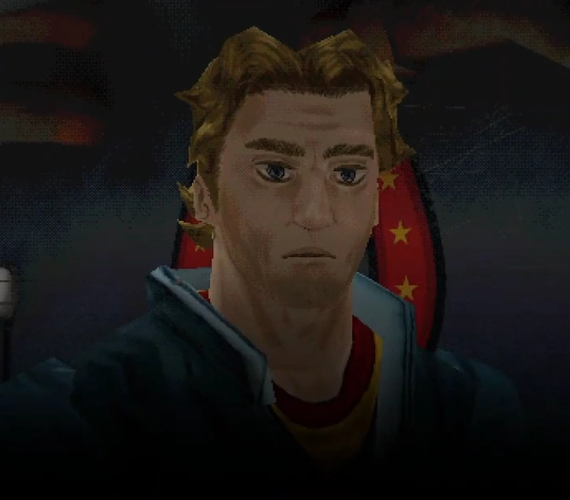
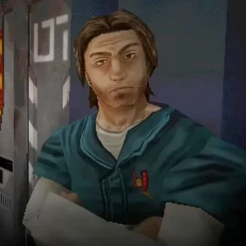
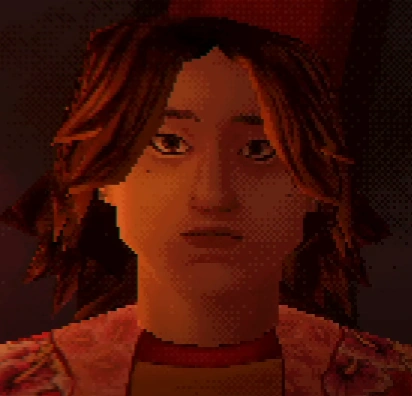
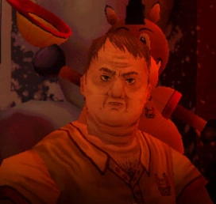

Аня работала медсестрой на «Тулпаре». Как выясняется, она так и не поступила в медицинский институт. Кроме того, она, как и остальные члены экипажа, находится в затруднительном финансовом положении: у нее совершенно нет сбережений.
Аня
Аня работала медсестрой на «Тулпаре». Как выясняется, она так и не поступила в медицинский институт. Кроме того, она, как и остальные члены экипажа, находится в затруднительном финансовом положении: у нее совершенно нет сбережений.

Капитан космического судна "Тулпар". После крушения "Тулпара" получил многочисленные ожоги, лишился ладоней, стоп и потерял возможность говорить.
Кёрли
Капитан космического судна "Тулпар". После крушения "Тулпара" получил многочисленные ожоги, лишился ладоней, стоп и потерял возможность говорить.

Джимми – главный герой Mouthwashing и второй пилот космического корабля Тулпар. Он отвечает за навигацию и берет на себя роль капитана в случае чрезвычайной ситуации.
Джимми
Джимми – главный герой Mouthwashing и второй пилот космического корабля Тулпар. Он отвечает за навигацию и берет на себя роль капитана в случае чрезвычайной ситуации.

Дайске был стажером на космическом грузовом судне "Тулпар" под руководством корабельного механика Свонси.
Дайске
Дайске был стажером на космическом грузовом судне "Тулпар" под руководством корабельного механика Свонси.

Инженер-ремонтник космического грузового корабля «Тулпар».
Свонси
Инженер-ремонтник космического грузового корабля «Тулпар».